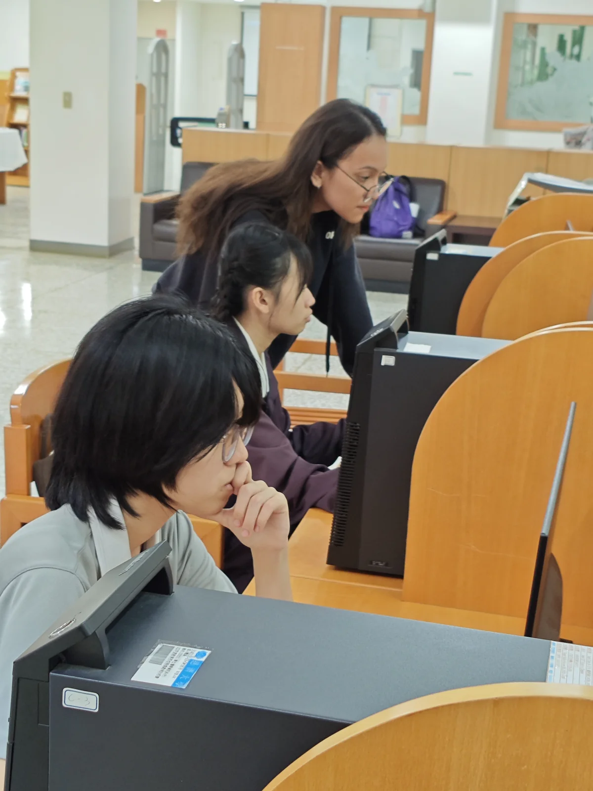
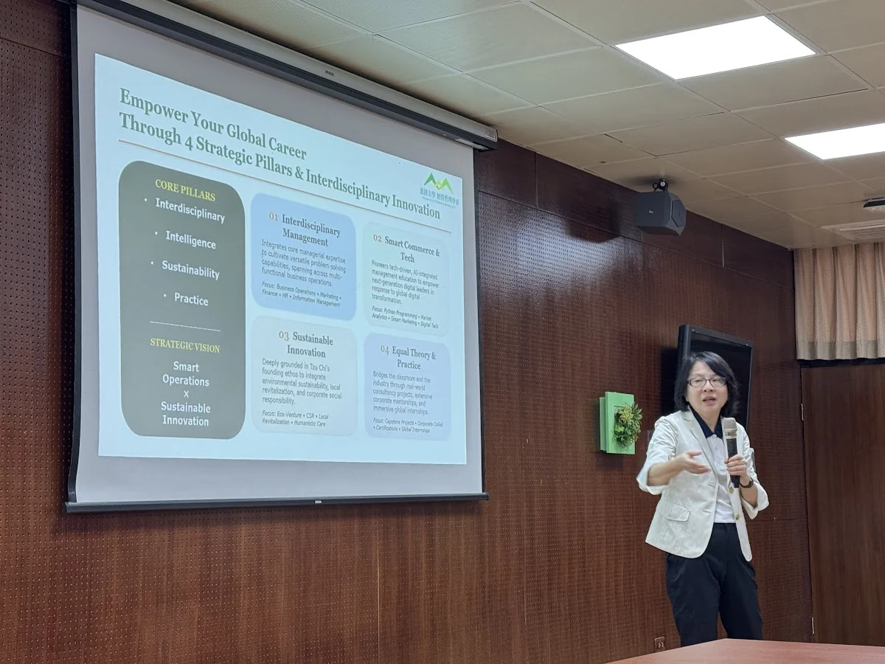

跳至主要內容
經營管理學系
慈濟大學・經營管理學系
首頁
關於本系
系所簡介
願景與使命
系所沿革
課程學習
學習方向
各學年度課程
專業證照門檻
表單與學習資源
師資陣容
認識師長
學生生活
經管系生活
走出校園
最新消息
消息與成果
行事曆
入學資訊
English
EN
學習方向

運用數位工具學習・圖書館電腦區
01
營運管理
02
智慧商務
03
永續創新
04
餐飲管理

01
管理學習・課堂現場
營運管理
理解營運、產業與管理實務。
查看課程資訊
本頁學習方向為簡要介紹；正式模組及課程名稱，請以入學年度課程文件為準。
官方學習方向
各學年度課程
專業證照
表單與規章
↑
想找什麼資訊？
搜尋網頁、師資與學習資源